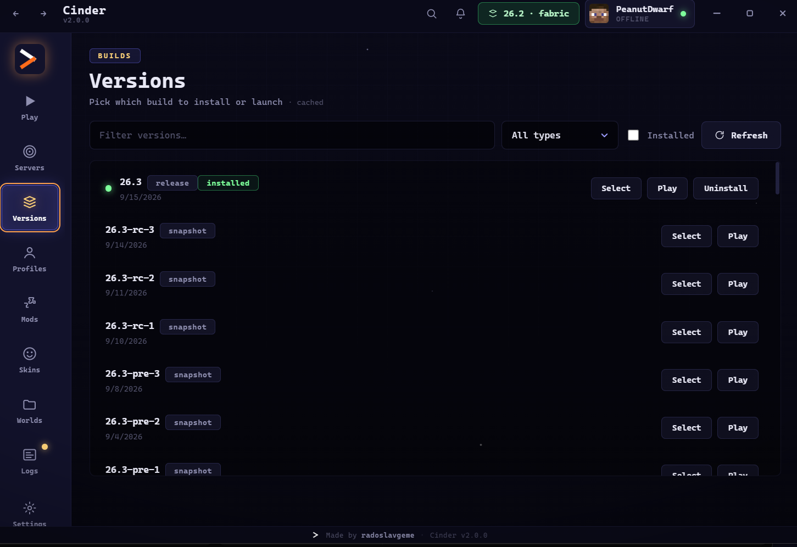
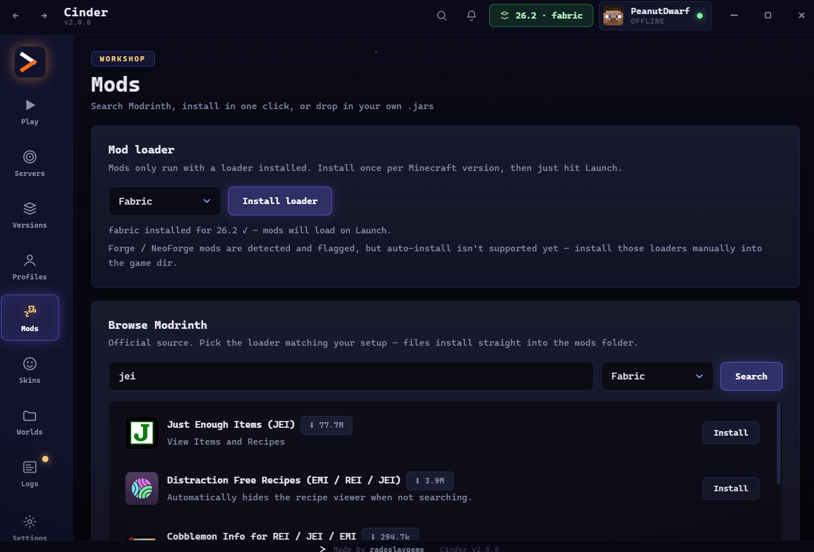

Feature tour
Launcher mapped end to end
Everything below ships in Cinder v2.0.0 and is verified against the app. Screenshots are from the real launcher.
The launcher
-
Offline + Microsoft profiles
Local nicknames with a name forge that suggests guaranteed-valid names, plus Microsoft login with automatic token refresh. Click any profile to make it active.
-
Versions, honestly cached
Live Mojang list with a 6-hour cache and an offline fallback. Search, filter by release/snapshot/beta/alpha, see installed badges, uninstall in one click.
-
Fabric & Quilt auto-install
Pick a loader and it installs itself for the selected version on next launch. Forge/NeoForge files are detected and flagged with a clear warning.
-
Modrinth mods in-app
Search Modrinth, pick an exact file with a version picker, toggle mods on/off without deleting them, or drop in your own .jars.
-
World backups & restore
Singleplayer saves with size and date. Zip backups, restore the newest one (your current world is kept as a timestamped copy), delete with confirmation.
-
Live server pings
Featured networks show live players, MOTD and latency, refreshed with a 60-second cache. Paste any Java server IP for quick-join on launch.
-
3D skin previews
Auto-spinning 3D view for any Java username, your active profile, or a 64×64 PNG from disk. Textures are cached for a day and work offline after first fetch.
-
Performance & diagnostics
JVM presets (Balanced, G1GC, ZGC with a Java-21 guard), per-version Java auto-pick, update checker, and one-click diagnostics copy for support.
-
Discord presence, zero setup
Keep the Discord desktop app open and your profile shows Cinder automatically — in game it switches to version, player and server.

